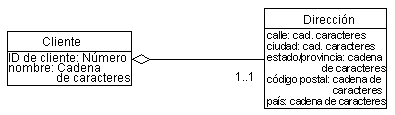
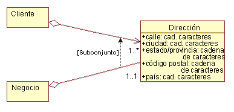
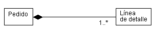
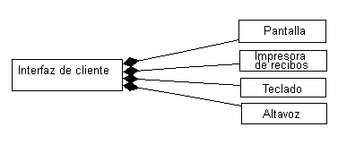
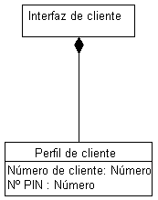
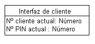
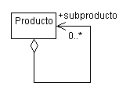

| Directriz: Agregación |
 |
|
| Elementos relacionados |
|---|
AgregaciónLa agregación se utiliza para modelar una relación composicional entre elementos de modelo. Existen muchos ejemplos de relaciones composicionales: una Biblioteca contiene Libros, en los Departamentos de una empresa hay Empleados, un Sistema está compuesto por una serie de Dispositivos. Para modelar esto, el agregado (Departamento) tiene una asociación de agregación a las partes constituyentes (Empleado). Un diamante vacío se adjunta al final de una vía de acceso de asociación en el lugar del agregado (el conjunto) para indicar la agregación. Ejemplo En este ejemplo un Cliente tiene una Dirección. Utilizamos la agregación porque las dos clases representan los componentes de un conjunto más grande. También hemos escogido modelar la Dirección como clase separada, ya que muchos otros tipos de cosas también tienen direcciones.  Un objeto agregado puede mantener unidos otros objetos. Agregación compartidaUna relación de agregación que dispone de una multiplicidad superior a la establecida para el agregado se denomina compartida, y destruir el agregado no destruye necesariamente los componentes. Por implicación, una agregación compartida forma un gráfico, o un árbol con muchas ramas. Las agregaciones compartidas se utilizan en los casos en que existe una fuerte relación entre dos clases, para que la misma instancia pueda participar en dos agregaciones diferentes. Ejemplo Imagine el caso de una persona que trabaja en casa. La Persona y la Empresa tienen una dirección; en realidad, es la misma dirección. La Dirección es un componente integral de la Persona y de la Empresa. La Empresa puede dejar de existir, dejando a la Persona, con suerte, en la misma dirección. Tenga en cuenta, también, que en este caso es posible empezar con una agregación compartida y convertir a una agregación no compartida en una fecha posterior. La empresa basada en el hogar puede crecer y prosperar, y trasladarse a una oficina aparte. En este punto, la Persona y la Empresa dejarán de compartir la misma dirección. Como resultado, la agregación ya no es compartida.  Un ejemplo de agregación compartida. ComposiciónComposición es una forma de agregación con una fuerte propiedad y una vida coincidente del componente con el agregado. La multiplicidad del final del agregado (en el ejemplo, el Pedido) no puede superar uno (es decir, no se puede compartir). La agregación también es inalterable, así que una vez establecida, los enlaces no se pueden cambiar. Por implicación, una agregación de compuestos forma un "árbol" de componentes, cuya raíz es el agregado, y las ramas son los componentes. Una agregación composicional debe utilizarse sobre una agregación "simple" cuando existe una fuerte relación de interdependencia entre el agregado y los componentes; donde la definición del agregado está incompleta sin los componentes. En el ejemplo anterior, tiene sentido tener incluso un Pedido si no se está pidiendo nada (por ej., Elementos de línea). En algunos casos, esta interdependencia se puede identificar en el análisis (como sucede en este ejemplo), pero habitualmente no es hasta el diseño cuando se pueden tomar estas decisiones con convencimiento. Un diamante lleno se adjunta al final de una vía de acceso de asociación para indicar la composición, tal como se muestra a continuación:  Un ejemplo de agregación composicional. Ejemplo En este ejemplo, la Interfaz de usuario está compuesta de otras clases diferentes. En este ejemplo, la multiplicidad de agregaciones todavía no están especificadas.  Un objeto de la Interfaz de cliente sabe qué objetos Impresora de visualización y recibo, Teclado y Altavoz le pertenecen. Utilización de la composición para modelar propiedades de claseUna propiedad de una clase es algo que se sabe de la clase. Como en el caso de la clase Cliente que se ha mostrado, se puede escoger modelar la Dirección del cliente como clase, como hemos mostrado, o bien como conjunto de atributos de la clase. La decisión de utilizar una clase y la relación de agregación, o un conjunto de atributo, depende de lo siguiente:
Ejemplo En un Cajero automático, el sistema debe mantener un registro del cliente actual y del PIN, y presupongamos que la Interfaz de cliente es la responsable de esto. Esta información se puede considerar como las propiedades de la clase. Se puede llevar a cabo con una clase separada, tal como se muestra a continuación:  Propiedades del objeto modeladas mediante agregación La alternativa, conseguir que la Interfaz de cliente realice el seguimiento del cliente actual y del PIN utilizando atributos, se modela del modo siguiente:  Propiedades del objeto modeladas mediante atributos La decisión de utilizar atributos o una asociación de agregaciones para una clase separada, se determina basándose en el grado de acoplamiento entre los conceptos que se representan: cuando los conceptos que se están modelando están estrechamente conectados, utilice atributos. Cuando es posible que los conceptos cambien independientemente, utilice la agregación. ¿Agregación o asociación?La agregación debe utilizarse sólo en los casos en que existe una relación composicional entre clases, donde una clase está compuesta de otras clases, donde los "componentes" están incompletos fuera del contexto del conjunto. Considere el caso de un Pedido: no tiene sentido tener un pedido "vacío" y que no contenga "nada". Los mismo sucede para los agregados: Los departamentos deben tener Empleados, las Familias deben tener Miembros de la familia, etc. Si las clases pueden tener identidades independientes fuera del contexto proporcionado por otras clases, si no son componentes de un conjunto mayor, debe utilizarse la relación de asociación. Además, en caso de duda, una asociación es más adecuada; las agregaciones son, generalmente, obvias, y una agregación sólo se elige para ayudar a clarificar. No es crucial para el éxito del esfuerzo de modelado. AutoagregacionesA veces, una clase se puede agregar a si misma. Esto no significa que una instancia de esa clase esté compuesta de si misma (sería ridículo), significa que una instancia de la clase es un agregado compuesto de otras instancias de la misma clase. En el caso de las autoagregaciones, los nombres de rol son esenciales para distinguir el objetivo de la asociación. Ejemplo Considere la autoagregación siguiente que implica la clase Producto:  En este caso, un producto puede estar compuesto de otros productos; si lo está, los productos agregados se denominan subproductos. La asociación es navegable sólo desde el agregado al subproducto; es decir, los subproductos no sabrán de qué productos forman parte (ya que pueden formar parte de varios productos). |
© Copyright IBM Corp. 1987, 2006. Reservados todos los derechos. |